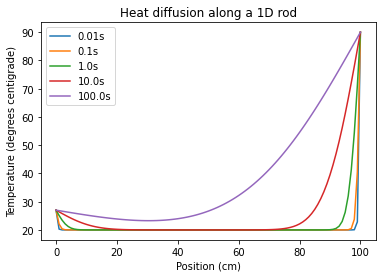

import numpy as np
import matplotlib.pyplot as pltForward Time Central Space
The diffusion equation is an initial value problem
In the previous section we solved a boundary value problem in the form of Laplace’s equation. In this section we will look at an initial value problem, which is a more complex type of PDE. An initial value problem is more complex as we are told the starting conditions and then have to predict future behaviour as a function of time.
The example we will use is the one-dimensional diffusion equation:
\[\begin{equation} \frac{\partial \phi}{\partial t} = D\frac{\partial^2 \phi}{\partial x^2} \end{equation}\]
In this case we have a variable \(\phi(x,t)\) that depends on position \(x\) and time \(t\) - so can we not solve it in the same way as finding the \(\phi(x,y)\) Laplace’s equation, which also had two independent variables?
The problem is that we only have an initial condition in the time dimension - we know the value of \(\phi(x,t)\) at \(t=0\) but we do not typically know the value of \(t\) at a later point. In the spatial dimensions we know the boundary conditions at either end of the grid.
Instead, we will use the Forward-Time Centred-Space method (FTCS).
There are two steps to the Forward-Time Centred-Space method
Step one
Use the finite difference method to express the 1D Laplacian as a set of simulatenous equations:
\[\begin{equation} \frac{\partial^2\phi}{\partial x^2} = \frac{\phi(x+a,t)+\phi(x-a,t) - 2\phi(x,t)}{a^2} \end{equation}\]
where \(a\) is the grid spacing.
Substitute this back into the diffusion equation to give a set of simulataneous ODEs:
\[\begin{equation} \frac{d \phi}{d t} = \frac{D}{a^2}(\phi(x+a,t)+\phi(x-a,t)-2\phi(x,t)) \end{equation}\]
If there are \(N\) grid points then Equation 3 corresponds to a set of \(N\) equations. It is an ODE as there is derivative with respect to only one variable - time.
Step two
We now have a set of simultaneous ODEs for \(\phi(x,t)\). So we can use Euler’s method to evolve the system forward in time. Euler’s method for solving an ODE of the form \(\frac{d\phi}{dt} = f(\phi,t)\) has the general form:
\[\begin{equation} \phi(t+h) \simeq \phi(t) + hf(\phi, t). \end{equation}\]
Applying this to Equation 3 gives:
\[\begin{equation} \phi(x,t+h) = \phi(x,t) + h\frac{D}{a^2}(\phi(x+a,t)+\phi(x-a,t)-2\phi(x,t)) \end{equation}\]
The FTCS method can be applied using the Python skills we have developed
Consider a 10cm rod of stainless steel initially at a uniform temperature of 20\(^\mathrm{o}\) Celsius. The rod is dipped in a hot water bath at 90\(^\mathrm{o}\) Celsius at one end, and held in someone’s hand at the other. Assume that the hand is at constant body temperature throughout (27\(^\mathrm{o}\) Celsius).
The problem can be represented visually as follows:

Our goal is to calculate the temperature profile of the steel as a function of distance \(x\) from the cold side to the hot side, and as a function of time. For simplicity let us assume that the rod is perfectly insulated so that heat only moves horizontally; as a result this problem can be modelled as 1-dimensional. Also assume that neighter the hot water bath or the hand change temperature appreciably.
Thermal conduction is described by the diffusion equation (or heat equation in this context)
\[\begin{equation} \frac{\partial \phi}{\partial t} = D\frac{\partial^2 \phi}{\partial x^2}, \end{equation}\]
where \(D\) is the material dependent thermal diffusivity. For steel \(D=4.25\times10^{-6}\mathrm{m}^2\mathrm{s}^{-1}\).
First, let’s import the libraries we will be using
Now let’s fix some of the constants in the problem
L = 0.1 # width of the rod in metres
D = 4.25e-6 # thermal diffusivity of steelAnd some of the numerical parameters:
N = 100 # number of divisions in the grid
a = L/N # grid spacing
h = 1e-4 # time stepLet’s specify the boundary conditions and the initial condition
T_left = 27.0 # temperature fixed on left side of rod
T_right = 90.0 # temperature fixed on right side of rod
T_middle = 20.0 # temperature of rod at the beginningAnd now create an array \(T\) to hold the temperature of the rod and an array \(T_{\mathrm{new}}\) to calculate the temperature of the rod after evolving through time. Note that there are \(N\) grid divisions but \(N+1\) grid points (as we are evaluating at the boundary on each edge).
T = np.empty(N+1, float)
T_new = np.empty(N+1, float)Apply the boundary conditions and initial condition to our rod:
T[0] = T_left
T[-1] = T_right
T[1:-1] = T_middle
T_new[0] = T_left
T_new[-1] = T_rightdef evolve(T,T_new):
c = (h*D)/(a*a)
T_new[1:N] = T[1:N] + c*(T[2:N+1]+T[0:N-1]-2*T[1:N])
return T, T_new
Note that in the function evolve we implement Equation 5. We make use of Numpy’s element-by-element array manipulation to evaluate the \(N-1\) equations in a single step.
epsilon = h/100
times=np.array([0.01,0.1,1,10,100])
t_end = times[-1]+epsilon
t=0.0
while t < t_end:
T_new, T = evolve(T, T_new)
t+=h
for time in times:
if abs(t-time)<epsilon:
plt.plot(T,label="{}s".format(round(t,ndigits=3)))
plt.legend()
plt.title("Heat diffusion along a 1D rod")
plt.xlabel("Position (cm)")
plt.ylabel("Temperature (degrees centigrade)")Text(0, 0.5, 'Temperature (degrees centigrade)')